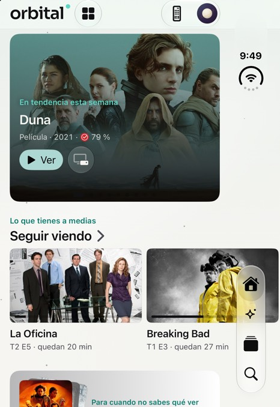
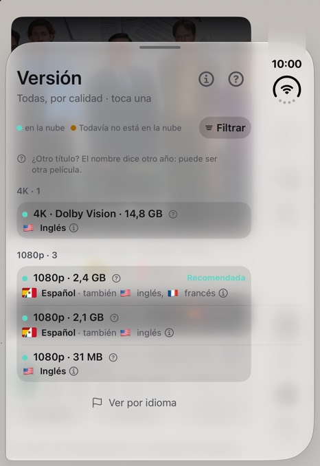
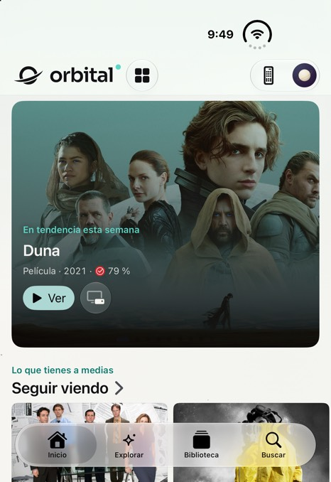
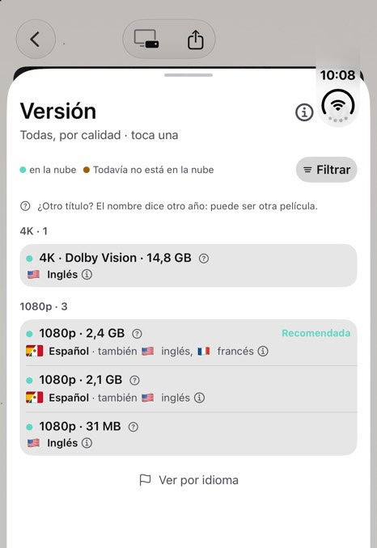

<title>Orbital en el iPhone Duo</title>
<meta name="claude:viewport-fit-sides" content="cover">
<link rel="stylesheet" href="https://fonts.googleapis.com/css2?family=Inter:wght@400;500;600;700&family=Space+Grotesk:wght@500;700&display=swap">
<style>
/* Layout: una columna de lectura; cada pantalla y cada decisión, una fila de maquetas del Duo lado a lado. Oscuro a propósito: es la sala de Orbital. */
:root {
  --sala: #0b0e10; --panel: #13181b; --linea: #263036; --texto: #eef2f1; --suave: #9aa7a6;
  --voz: #4fd1c5; --papel: #f3f1ea; --ambar: #e8a650; --rojo: #ff6b6b; --pliegue: #e8a650;
  --display: "Space Grotesk", "Inter", system-ui, sans-serif; --cuerpo: "Inter", system-ui, -apple-system, sans-serif;
  color-scheme: dark;
}
* { box-sizing: border-box; }
body { background: var(--sala); color: var(--texto); font-family: var(--cuerpo); font-size: 15px; line-height: 1.55; }
.page { max-width: 1180px; margin: 0 auto; padding-block: 40px 96px; padding-left: max(16px, env(safe-area-inset-left, 0px)); padding-right: max(16px, env(safe-area-inset-right, 0px)); display: grid; gap: 64px; }
h1, h2, h3 { font-family: var(--display); text-wrap: balance; margin: 0; }
h1 { font-size: clamp(30px, 5vw, 48px); line-height: 1.1; }
h2 { font-size: 26px; }
h3 { font-size: 18px; }
p { margin: 0; max-width: 70ch; }
a { color: var(--voz); }
a:focus-visible, summary:focus-visible { outline: 2px solid var(--voz); outline-offset: 3px; }
.porque { color: var(--voz); font-size: 13px; font-weight: 600; }
.suave { color: var(--suave); }
section { display: grid; gap: 22px; }
section > *, .pantalla > *, .decision > *, .page > * { min-width: 0; }
.intro { display: grid; gap: 16px; }
.intro p { color: var(--suave); font-size: 16px; }
.caja { display: grid; gap: 10px; padding: 20px 22px; background: var(--panel); border: 1px solid var(--linea); border-radius: 14px; }
.caja ul, .caja ol { margin: 0; padding-left: 20px; display: grid; gap: 6px; }
.caja li { color: var(--suave); }
.caja b { color: var(--texto); }
.reco-box { padding: 22px; border-radius: 16px; background: color-mix(in oklab, var(--voz) 10%, var(--panel)); border: 1px solid color-mix(in oklab, var(--voz) 45%, transparent); display: grid; gap: 10px; }
.dictado { font-family: var(--display); font-size: clamp(17px, 2.4vw, 21px); color: var(--voz); letter-spacing: .01em; }
.tabla-wrap { overflow-x: auto; border: 1px solid var(--linea); border-radius: 12px; }
table { border-collapse: collapse; width: 100%; min-width: 620px; font-size: 14px; }
th, td { text-align: left; padding: 10px 14px; border-bottom: 1px solid var(--linea); vertical-align: top; }
th { color: var(--suave); font-weight: 600; font-size: 12px; letter-spacing: .04em; background: var(--panel); }
tr:last-child td { border-bottom: 0; }
td.num { font-variant-numeric: tabular-nums; white-space: nowrap; }
.sello { display: inline-block; font-size: 11px; font-weight: 700; padding: 2px 8px; border-radius: 6px; letter-spacing: .03em; white-space: nowrap; }
.s-apple { background: color-mix(in oklab, var(--voz) 22%, transparent); color: var(--voz); }
.s-medido { background: color-mix(in oklab, var(--ambar) 22%, transparent); color: var(--ambar); }
.s-resena { background: var(--linea); color: var(--suave); }
.s-alto { background: color-mix(in oklab, var(--rojo) 25%, transparent); color: var(--rojo); }
.s-medio { background: color-mix(in oklab, var(--ambar) 25%, transparent); color: var(--ambar); }
.s-bien { background: color-mix(in oklab, var(--voz) 22%, transparent); color: var(--voz); }
.hallazgos { display: grid; gap: 12px; }
.hallazgo { display: grid; grid-template-columns: auto 1fr; gap: 6px 14px; padding: 14px 16px; border-radius: 12px; background: var(--panel); border: 1px solid var(--linea); }
.hallazgo > div { min-width: 0; display: grid; gap: 4px; }
.hallazgo p { color: var(--suave); font-size: 14px; }
.principios { display: grid; grid-template-columns: repeat(auto-fit, minmax(260px, 1fr)); gap: 14px; }
.principio { display: grid; gap: 6px; padding: 16px; border-radius: 12px; background: var(--panel); border: 1px solid var(--linea); align-content: start; }
.principio p { font-size: 14px; color: var(--suave); }
.fuente { font-size: 12px; color: var(--suave); }

/* Opciones lado a lado */
.opciones { display: grid; grid-template-columns: repeat(auto-fit, minmax(270px, 1fr)); gap: 18px; }
.opcion { display: grid; gap: 12px; align-content: start; min-width: 0; padding: 16px; border-radius: 16px; background: var(--panel); border: 1px solid var(--linea); }
.opcion.reco { border-color: var(--voz); box-shadow: 0 0 0 1px var(--voz) inset; }
.cab { display: flex; align-items: baseline; gap: 10px; flex-wrap: wrap; }
.codigo { font-family: var(--display); font-weight: 700; font-size: 20px; color: var(--voz); }
.reco-sello { font-size: 11px; font-weight: 700; color: var(--sala); background: var(--voz); padding: 2px 8px; border-radius: 6px; }
.pro, .contra { margin: 0; padding-left: 18px; display: grid; gap: 4px; font-size: 14px; }
.pro li::marker { content: "+  "; color: var(--voz); }
.contra li::marker { content: "–  "; color: var(--rojo); }
.decision { display: grid; gap: 18px; padding-top: 8px; border-top: 1px solid var(--linea); }
.decision > p { color: var(--suave); }

/* Pantallas: tres poses de cada una */
.poses { display: grid; grid-template-columns: repeat(auto-fit, minmax(240px, 1fr)); gap: 18px; align-items: end; }
.pose { display: grid; gap: 8px; min-width: 0; justify-items: center; }
.pose .etq { font-size: 12px; color: var(--suave); text-align: center; max-width: 34ch; }
.pose .etq b { color: var(--texto); }
.pantalla { display: grid; gap: 18px; padding: 20px; border-radius: 18px; background: var(--panel); border: 1px solid var(--linea); }
.pantalla .texto { display: grid; gap: 8px; }
.pantalla .texto p { color: var(--suave); font-size: 14px; }
.pantalla ul { margin: 0; padding-left: 18px; display: grid; gap: 4px; color: var(--suave); font-size: 14px; }
.pantalla ul b { color: var(--texto); }

/* ——— El aparato dibujado. Medidas en puntos de quienes midieron el simulador: afuera ≈466×678, adentro ≈951×669 ——— */
.dev { position: relative; width: 100%; max-width: 100%; overflow: hidden; background: #050708; border: 2px solid #34404a; border-radius: 7cqi; container-type: inline-size; }
.dev.fuera { aspect-ratio: 466 / 678; max-width: 190px; }
.dev.abierto { aspect-ratio: 951 / 669; max-width: 360px; border-radius: 4.5cqi; }
.dev.alto { aspect-ratio: 669 / 951; max-width: 230px; border-radius: 5cqi; }
.dev.mitad { aspect-ratio: 669 / 475; max-width: 260px; border-radius: 4cqi 4cqi 1cqi 1cqi; }
.dev.mitad.baja { border-radius: 1cqi 1cqi 4cqi 4cqi; }
/* el pliegue: franja de 40 pt (≈4.2 % del ancho abierto) que nada interactivo debe tocar */
.dev.v::after, .dev.h::after { content: ""; position: absolute; pointer-events: none; z-index: 5; }
.dev.v::after { top: 0; bottom: 0; left: 50%; width: 4.2%; transform: translateX(-50%); background: repeating-linear-gradient(180deg, color-mix(in oklab, var(--pliegue) 55%, transparent) 0 6px, transparent 6px 12px); opacity: .35; border-inline: 1px dashed color-mix(in oklab, var(--pliegue) 70%, transparent); }
.dev.h::after { left: 0; right: 0; top: 50%; height: 4.2%; transform: translateY(-50%); background: repeating-linear-gradient(90deg, color-mix(in oklab, var(--pliegue) 55%, transparent) 0 6px, transparent 6px 12px); opacity: .35; border-block: 1px dashed color-mix(in oklab, var(--pliegue) 70%, transparent); }
.camara { position: absolute; top: 2.2cqi; right: 3cqi; width: 3.2cqi; height: 3.2cqi; border-radius: 50%; background: #000; box-shadow: 0 0 0 .6cqi #1b2226; z-index: 6; }
/* a medio abrir: la mitad de arriba de pie y la de abajo acostada sobre la mesa */
.mesa { display: grid; justify-items: center; width: 100%; max-width: 260px; perspective: 600px; }
.mesa .dev.mitad.baja { transform: rotateX(58deg); transform-origin: top center; margin-top: -1px; }
.mesa .sombra { width: 90%; height: 10px; margin-top: -32%; border-radius: 50%; background: radial-gradient(closest-side, rgba(0,0,0,.6), transparent); }
.libro { display: flex; justify-content: center; width: 100%; max-width: 300px; perspective: 700px; }
.libro .hoja { position: relative; width: 50%; aspect-ratio: 455 / 669; overflow: hidden; background: #050708; border: 2px solid #34404a; container-type: inline-size; }
.libro .hoja.izq { border-radius: 9cqi 1cqi 1cqi 9cqi; transform: rotateY(24deg); transform-origin: right center; }
.libro .hoja.der { border-radius: 1cqi 9cqi 9cqi 1cqi; transform: rotateY(-24deg); transform-origin: left center; }

/* piezas de las pantallas */
.b { position: absolute; }
.arte { background:
  radial-gradient(circle at 62% 34%, #d9b48a 0 6%, transparent 6.5%),
  radial-gradient(ellipse at 62% 66%, #2f4b52 0 17%, transparent 17.5%),
  radial-gradient(circle at 80% 40%, #b98f6a 0 4.5%, transparent 5%),
  radial-gradient(ellipse at 80% 70%, #3b3b2e 0 12%, transparent 12.5%),
  linear-gradient(160deg, #5f8a8a 0%, #2c4a50 48%, #172529 100%); }
.velo { background: linear-gradient(180deg, transparent 40%, rgba(11,14,16,.9) 85%, var(--sala) 100%); }
.velo-izq { background: linear-gradient(90deg, rgba(11,14,16,.95) 0%, rgba(11,14,16,.5) 45%, transparent 70%); }
.ln { height: 1.6cqi; border-radius: 1cqi; background: var(--texto); opacity: .55; }
.ln.t { height: 3.2cqi; opacity: .9; }
.ln.s { opacity: .3; }
.btn { height: 6cqi; border-radius: 1.4cqi; background: var(--papel); }
.btn.voz { background: var(--voz); }
.btn.gris { background: rgba(255,255,255,.14); border: 1px solid rgba(255,255,255,.12); }
.fila { display: flex; gap: 2cqi; }
.fila i { display: block; flex: 1; aspect-ratio: 2 / 3; border-radius: 1.4cqi; background: #2a3a40; }
.fila i:nth-child(3n+1) { background: linear-gradient(170deg, #6b4f3a, #2b2520); }
.fila i:nth-child(3n+2) { background: linear-gradient(170deg, #3d5a6b, #1d2a33); }
.fila i:nth-child(3n) { background: linear-gradient(170deg, #5b6b45, #232a1c); }
.fila.ancha i { aspect-ratio: 16 / 9; }
.rejilla { display: grid; gap: 2cqi; }
.rejilla i { display: block; aspect-ratio: 2 / 3; border-radius: 1.2cqi; background: #2a3a40; }
.rejilla i:nth-child(3n+1) { background: linear-gradient(170deg, #6b4f3a, #2b2520); }
.rejilla i:nth-child(3n+2) { background: linear-gradient(170deg, #3d5a6b, #1d2a33); }
.rejilla i:nth-child(4n) { background: linear-gradient(170deg, #5b6b45, #232a1c); }
.barra { display: flex; justify-content: space-around; align-items: center; background: rgba(19,24,27,.92); border-top: 1px solid var(--linea); }
.barra b { display: block; width: 7cqi; height: 7cqi; border-radius: 2cqi; background: var(--suave); opacity: .45; }
.barra b.on { background: var(--voz); opacity: 1; }
.barra-arriba { display: flex; gap: 3cqi; align-items: center; }
.barra-arriba b { display: block; height: 2.2cqi; width: 9cqi; border-radius: 1cqi; background: var(--suave); opacity: .5; }
.barra-arriba b.on { background: var(--voz); opacity: 1; }
.barra-arriba .logo { width: 6cqi; height: 6cqi; border-radius: 50%; background: radial-gradient(circle at 35% 35%, var(--voz), #1a5f59); opacity: 1; }
.lado { display: grid; align-content: center; gap: 4cqi; justify-items: center; background: rgba(19,24,27,.92); border-left: 1px solid var(--linea); }
.lado b { display: block; width: 4.5cqi; height: 4.5cqi; border-radius: 1.4cqi; background: var(--suave); opacity: .45; }
.lado b.on { background: var(--voz); opacity: 1; }
.pest { display: flex; gap: 3cqi; }
.pest b { display: block; height: 1.8cqi; width: 12cqi; border-radius: 1cqi; background: var(--suave); opacity: .45; }
.pest b.on { background: var(--voz); opacity: 1; }
.ep { display: grid; gap: 2cqi; }
.ep div { display: grid; grid-template-columns: 30% 1fr; gap: 2cqi; align-items: center; }
.ep div i { display: block; aspect-ratio: 16 / 9; border-radius: 1cqi; background: linear-gradient(160deg, #3f5c5e, #1d2c30); }
.ep div span { display: grid; gap: 1.2cqi; }
.ep div span::before, .ep div span::after { content: ""; display: block; height: 1.6cqi; border-radius: 1cqi; background: var(--texto); opacity: .5; }
.ep div span::after { width: 70%; opacity: .25; }
.vid { background: radial-gradient(ellipse at 55% 45%, #4c6f73 0 18%, transparent 40%), linear-gradient(150deg, #23393d, #0d1517); border-radius: .6cqi; }
.vid::before { content: ""; position: absolute; left: 50%; top: 50%; width: 0; height: 0; transform: translate(-30%, -50%); border-style: solid; border-width: 2.4cqi 0 2.4cqi 4cqi; border-color: transparent transparent transparent rgba(255,255,255,.75); }
.progreso { height: 1cqi; border-radius: 1cqi; background: linear-gradient(90deg, var(--voz) 0 38%, rgba(255,255,255,.2) 38%); }
.ctrl { display: flex; justify-content: center; align-items: center; gap: 6cqi; }
.ctrl b { display: block; width: 7cqi; height: 7cqi; border-radius: 50%; background: rgba(255,255,255,.18); }
.ctrl b.grande { width: 11cqi; height: 11cqi; background: var(--papel); }
.chips { display: flex; gap: 2cqi; flex-wrap: wrap; }
.chips b { display: block; height: 5cqi; width: 16cqi; border-radius: 1.4cqi; background: rgba(255,255,255,.12); border: 1px solid rgba(255,255,255,.12); }
.chips b.on { background: color-mix(in oklab, var(--voz) 35%, transparent); border-color: var(--voz); }
.dpad { border-radius: 50%; background: radial-gradient(circle, #1d2629 0 30%, transparent 31%), conic-gradient(from 45deg, #2a3539 0 25%, #222c30 0 50%, #2a3539 0 75%, #222c30 0); border: 1px solid var(--linea); }
.dpad::after { content: ""; position: absolute; inset: 36%; border-radius: 50%; background: var(--voz); opacity: .85; }
.sub { text-align: center; font-size: 2.6cqi; color: var(--papel); font-weight: 600; text-shadow: 0 1px 2px #000; }
.aviso { display: flex; align-items: center; justify-content: center; font-size: 2.6cqi; font-weight: 600; color: var(--sala); background: var(--ambar); border-radius: 1.4cqi; }
.negro { background: #000; }
.franja { background: repeating-linear-gradient(135deg, #0f1416 0 8px, #141b1e 8px 16px); }
.flecha { font-size: 3.2cqi; color: var(--suave); text-align: center; font-weight: 600; }

/* diagrama de las poses */
.poses-aparato { display: grid; grid-template-columns: repeat(auto-fit, minmax(170px, 1fr)); gap: 18px; align-items: end; }
.mini { display: grid; gap: 8px; justify-items: center; text-align: center; }
.mini .etq { font-size: 13px; color: var(--suave); max-width: 26ch; }
.mini .etq b { color: var(--texto); display: block; }
.medida { font-variant-numeric: tabular-nums; font-family: var(--display); color: var(--ambar); font-size: 13px; }

.etapas { display: grid; gap: 14px; }
.etapa { display: grid; grid-template-columns: minmax(110px, 160px) 1fr; gap: 16px; padding: 18px; border-radius: 14px; background: var(--panel); border: 1px solid var(--linea); }
.etapa .n { font-family: var(--display); font-weight: 700; color: var(--voz); font-size: 18px; }
.etapa .n span { display: block; font-size: 12px; color: var(--suave); font-weight: 500; font-family: var(--cuerpo); margin-top: 4px; }
.etapa > div { min-width: 0; display: grid; gap: 8px; }
.etapa ul { margin: 0; padding-left: 18px; display: grid; gap: 4px; color: var(--suave); font-size: 14px; }
.etapa ul b { color: var(--texto); }
@media (max-width: 560px) { .etapa { grid-template-columns: 1fr; } }
.funciones { display: grid; grid-template-columns: repeat(auto-fit, minmax(300px, 1fr)); gap: 16px; }
.funcion { display: grid; gap: 10px; padding: 18px; border-radius: 14px; background: var(--panel); border: 1px solid var(--linea); align-content: start; }
.funcion p { font-size: 14px; color: var(--suave); }
.veredicto { font-size: 12px; font-weight: 700; }
details { background: var(--panel); border: 1px solid var(--linea); border-radius: 14px; padding: 16px 20px; }
summary { cursor: pointer; font-family: var(--display); font-weight: 700; font-size: 17px; }
details[open] summary { margin-bottom: 14px; }
details .cuerpo { display: grid; gap: 10px; font-size: 14px; color: var(--suave); }
details code { font-size: 13px; color: var(--texto); background: #0b0f11; padding: 1px 5px; border-radius: 4px; overflow-wrap: anywhere; }
.fuentes { columns: 2 300px; gap: 28px; font-size: 13px; color: var(--suave); margin: 0; padding-left: 18px; }
.fuentes li { margin-bottom: 6px; break-inside: avoid; overflow-wrap: anywhere; }
@media (prefers-reduced-motion: reduce) { .mesa .dev.mitad.baja, .libro .hoja { transform: none; } }
.hallazgo > .sello { align-self: start; }
</style>
<main class="page">

<header class="intro">
  <span class="porque">Propuesta · 26 nov 2026 · iPhone, iPad y Mac (la TV no cambia)</span>
  <h1>Orbital en el iPhone Duo</h1>
  <p>El Duo es el primer iPhone que se dobla. Cerrado es un teléfono ancho y corto. Abierto es una pantalla de casi tablet con un pliegue en medio. A medio abrir se para solo sobre la mesa. Esta propuesta revisa qué le pasaría a Orbital ahí, qué aprendieron Apple y los demás, y cómo podría verse y funcionar cada pantalla en cada forma.</p>
  <p>La idea en una línea: <b style="color:var(--texto)">cerrado es el bolsillo, abierto es la sala y a medio abrir es la tele en la mesa.</b> La misma Orbital en las tres formas, sin perder nada al doblar o desdoblar.</p>
</header>

<div class="reco-box">
  <span class="porque">Decidido · Fernando, 26 nov 2026</span>
  <span class="dictado">DU7-B · DU2-B · DU3-A · DU4-A · DU5-A · DU6-A</span>
  <p class="suave">«Vamos a ir con DU7B… y vamos con tus sugerencias de las decisiones.» DU1 se decide con las primeras capturas del simulador. Se suma una pose que faltaba: <b style="color:var(--texto)">cerrado y acostado</b> (la pantalla de afuera de lado). Cada pantalla la revisa un agente hipercrítico antes de darla por buena. Xcode 27.2 ya está instalado y Orbital corre en el Duo simulado.</p>
</div>

<section class="decision" style="border-top:0;padding-top:0">
  <span class="porque">Lo que te pido decidir ahora · 27 nov 2026 · capturas reales, Duo cerrado</span>
  <h2>DU1 · ¿Dónde van las pestañas en el Duo?</h2>
  <p class="suave">Ya con el simulador recorrí 13 pantallas de la pantalla de afuera (cerrado y de pie, como más se usa) de las dos formas. A la izquierda, lo que hace iOS si no le decimos nada. A la derecha, apagando la franja del costado. La primera impresión favorecía a B; al abrir hojas apareció un problema que no se puede arreglar desde Orbital.</p>
  <div class="opciones">
    <div class="opcion reco"><div class="cab"><span class="codigo">DU1-A</span><b>Donde las pone iOS (franja al costado)</b><span class="reco-sello">Recomiendo</span></div>
      
      
      <ul class="pro"><li><b>Parejo en toda la app:</b> pantallas, hojas y reproductor se acomodan igual; nada queda tapado de forma fija</li><li>Es lo que propone Apple: Orbital se siente parte del teléfono</li><li>Lo único que se cortaba («Decide por mí») ya está corregido</li></ul>
      <ul class="contra"><li>Las pestañas flotan encima del renglón «Seguir viendo»: tapan la orilla de la segunda tarjeta hasta que deslizas, como la barra de abajo en tu 17 Pro tapa lo de abajo</li><li>Se ve distinto a tu iPhone</li></ul></div>
    <div class="opcion"><div class="cab"><span class="codigo">DU1-B</span><b>Pestañas abajo, como en tu 17 Pro</b></div>
      
      
      <ul class="pro"><li>Inicio y las pantallas principales se ven y se usan como en tu iPhone</li><li>Abierto, las dos mitades quedan iguales (DU4)</li></ul>
      <ul class="contra"><li><b>Las hojas medianas se rompen:</b> en «Versión» y «Decide por mí» iOS regresa la hora a la franja del costado y <b>tapa el botón de ayuda (?)</b>. Lo intenté de tres maneras y iOS 27.2 no lo respeta en esas hojas</li><li>La app se sentiría a medias: unas pantallas de un modo y unas hojas del otro</li></ul></div>
  </div>
  <p class="suave"><b style="color:var(--texto)">Mi recomendación: DU1-A.</b> Cambié de opinión con la prueba completa: B se ve mejor en Inicio, pero rompe hojas que usas todos los días y no hay forma limpia de arreglarlo hoy. A se ve igual de bien en todas partes. Dejo B listo detrás de un interruptor: si Apple lo arregla en una versión de iOS, se cambia en un solo lugar.</p>
  <span class="dictado">Para dictar: «DU1-A» o «DU1-B»</span>
</section>

<div class="reco-box">
  <span class="porque">Lo que te pido decidir hoy: una sola cosa</span>
  <span class="dictado">DU7-A · primero medir</span>
  <p class="suave"><b style="color:var(--texto)">Si piensas comprar un Duo en los próximos meses.</b> Si no, DU7-C (esperar) basta, con dos condiciones: no actualizar Xcode sin revisar esto, y medir antes de llevar Orbital a la App Store. Si lo estás pensando, A te ayuda a decidir.</p>
  <p class="suave">Todo lo que sigue se apoya en medidas de otros desarrolladores y en maquetas hechas a mano. En la Mac no hay simulador del Duo: viene con Xcode 27.1 y la Mac tiene el 27.0. Recomiendo instalarlo en una copia aparte del proyecto (sin tocar cómo se compila Orbital hoy), abrir Orbital en el Duo simulado y volver con capturas reales. Son uno o dos días. Las demás decisiones (DU1 a DU6) van al final como adelanto, con hacia dónde me inclino hoy (en DU1 aún no). Se deciden después, sobre capturas y no sobre dibujos.</p>
</div>

<div class="caja">
  <b>Para leer esto</b>
  <ul>
    <li><b>Puntos:</b> la unidad con la que se diseña en iPhone. Tu 17 Pro mide 402 de ancho.</li>
    <li><b>Xcode 27.0 y 27.1:</b> la herramienta con la que se hace Orbital. Con la 27.0, la de hoy, iOS trata a Orbital como app «de antes» en el Duo. Con la 27.1, Orbital puede usar todo el Duo, pero cambia cómo se compila para todos los iPhone.</li>
    <li><b>Dos apps lado a lado</b> (Apple le dice Split View): Orbital en media pantalla y otra app en la otra mitad.</li>
    <li><b>Registro de paridad:</b> la lista donde anotamos en qué se diferencian a propósito el iPhone, el iPad, la Mac y la TV.</li>
    <li><b>Decisiones previas que aparecen:</b> DK1 y C1 (en el iPad las pestañas van arriba, y con espacio en un renglón con el logo), M2 (la ficha del iPad acostado con «Ver» a la izquierda y la sinopsis a la derecha), CT2 (el control de la TV como panel a la derecha, hecho para el iPad) y PA5-A (desde el 23 nov solo el iPhone se conecta a la TV).</li>
  </ul>
</div>

<!-- ——— 1. El aparato ——— -->
<section>
  <span class="porque">1 · El aparato</span>
  <h2>Dos pantallas casi de la misma forma, una mucho más grande</h2>
  <p class="suave">«Libre para Orbital» es lo que queda después de la barra de iOS al costado y los márgenes de arriba y abajo (la hora y la rayita para salir). Al abrirlo, la pantalla grande queda acostada, con el pliegue en medio de arriba abajo. Cada mitad mide casi lo mismo que la pantalla de afuera. Por eso el «modo libro» se siente natural.</p>

  <div class="poses-aparato">
    <div class="mini">
      <div class="dev fuera" style="max-width:120px"><span class="camara"></span><div class="b lado" style="right:0;top:0;bottom:0;width:18%"><b class="on"></b><b></b><b></b><b></b></div></div>
      <span class="etq"><b>Cerrado</b>Pantalla de afuera, 5.4"<br><span class="medida">≈ 466 × 678 · libre para Orbital ≈ 382 × 562</span></span>
    </div>
    <div class="mini">
      <div class="dev abierto v" style="max-width:220px"></div>
      <span class="etq"><b>Abierto, acostado</b>Como se abre normalmente, 7.6"<br><span class="medida">≈ 951 × 669 · libre para Orbital ≈ 867 × 553</span></span>
    </div>
    <div class="mini">
      <div class="dev alto h" style="max-width:150px"></div>
      <span class="etq"><b>Abierto, de pie</b>Girado: el pliegue queda horizontal<br><span class="medida">≈ 669 × 951</span></span>
    </div>
    <div class="mini">
      <div class="mesa" style="max-width:170px"><div class="dev mitad"></div><div class="dev mitad baja"></div></div>
      <span class="etq"><b>A medio abrir, sobre la mesa</b>Mitad de arriba de pie y mitad de abajo acostada, como laptop</span>
    </div>
    <div class="mini">
      <div class="libro" style="max-width:190px"><div class="hoja izq"></div><div class="hoja der"></div></div>
      <span class="etq"><b>A medio abrir, como libro</b>Dos páginas, una a cada lado del pliegue</span>
    </div>
  </div>

  <div class="tabla-wrap">
    <table>
      <thead><tr><th>Dato</th><th>Valor</th><th>Qué tan seguro</th></tr></thead>
      <tbody>
        <tr><td>Salida</td><td>Anunciado el 9 sep 2026, a la venta desde el 23 oct. Desde 1,999 dólares. Llega con iOS 27.1</td><td><span class="sello s-apple">Apple</span></td></tr>
        <tr><td>Pantalla de afuera</td><td class="num">5.4" · 1398 × 2034 píxeles · ≈ 466 × 678 puntos</td><td><span class="sello s-apple">Apple</span> <span class="sello s-medido">puntos medidos por terceros</span></td></tr>
        <tr><td>Pantalla de adentro</td><td class="num">7.6" · iOS dibuja a 2007 × 2853 y lo ajusta al panel · ≈ 669 × 951 puntos</td><td><span class="sello s-apple">Apple</span> <span class="sello s-medido">puntos medidos por terceros</span></td></tr>
        <tr><td>Proporción</td><td>Adentro 1 : 1.42, afuera 1 : 1.46. Un video de cine o tele (16:9) llena ≈ 80 % de la pantalla abierta</td><td><span class="sello s-medido">calculado</span></td></tr>
        <tr><td>Pestañas y barras</td><td>Afuera, y adentro acostado, iOS las pone a un costado (≈ 84 puntos). Apple recomienda usar las del sistema y ofrece una forma oficial de apagarlo. De pie, la barra de pestañas se queda abajo</td><td><span class="sello s-apple">Apple</span></td></tr>
        <tr><td>Pliegue</td><td>Una franja de ≈ 40 puntos que solo cuenta a medio abrir; plano casi no se nota. A medio abrir, iOS mueve sus propias hojas para que no queden en el pliegue. Con el uso se marca más</td><td><span class="sello s-apple">Apple</span> <span class="sello s-resena">medido por terceros</span></td></tr>
        <tr><td>Giro</td><td>Apple dice dos cosas: que la pantalla de adentro no respeta el «solo vertical» de las apps, y que lo respeta pero escala la app. Quien lo usa puede bloquear el giro de cada pantalla</td><td><span class="sello s-medio">no está claro</span></td></tr>
        <tr><td>Multitarea</td><td>Dos apps lado a lado adentro (la primera vez en un iPhone), con paneles de ≈ 426 puntos. Las apps que no se adaptan se escalan</td><td><span class="sello s-apple">Apple</span> <span class="sello s-medido">medido por terceros</span></td></tr>
        <tr><td>Capturas en la App Store</td><td>Desde abril 2027, para apps que se publiquen en la tienda. Orbital solo se instala por TestFlight interno (la prueba privada de Apple, solo para ti), así que hoy no le aplica. Sí le aplicaría a la versión de Orbital para la App Store, si sale</td><td><span class="sello s-apple">Apple</span></td></tr>
      </tbody>
    </table>
  </div>
</section>

<!-- ——— 2. Qué pasa hoy ——— -->
<section>
  <span class="porque">2 · Qué pasa hoy y qué pasaría al pasar a Xcode 27.1 (predicción sin comprobar)</span>
  <h2>Dos momentos distintos</h2>
  <p class="suave"><b style="color:var(--texto)">Hoy, con Xcode 27.0:</b> iOS trata a Orbital como app de antes. Según una sola medición de terceros, de certeza baja, Orbital no llega a todos los bordes: adentro queda en ≈ 871 × 669 y afuera en ≈ 386 × 678. Sus barras se quedan como en un iPhone normal. Es posible que hoy nada se vea roto, solo un teléfono estirado.</p>

  <div class="poses">
    <div class="pose">
      <div class="dev abierto">
        <div class="b" style="inset:0 8% 0 0;overflow:hidden">
          <div class="b arte" style="inset:0 0 50% 0"></div><div class="b velo" style="inset:0 0 50% 0"></div>
          <div class="b fila" style="left:3%;right:3%;top:52%"><i></i><i></i><i></i><i></i><i></i></div>
          <div class="b barra" style="left:0;right:0;bottom:0;height:10%"><b class="on"></b><b></b><b></b><b></b></div>
        </div>
        <div class="b franja" style="top:0;bottom:0;right:0;width:8%"></div>
      </div>
      <span class="etq"><b>Abierta, hoy (27.0):</b> un teléfono estirado, con una franja a un lado.</span>
    </div>
    <div class="pose">
      <div class="dev fuera"><span class="camara"></span>
        <div class="b" style="inset:0 17% 0 0;overflow:hidden">
          <div class="b arte" style="inset:0 0 62% 0"></div><div class="b velo" style="inset:0 0 62% 0"></div>
          <div class="b fila" style="left:6%;right:6%;top:42%"><i></i><i></i><i></i></div>
          <div class="b fila" style="left:6%;right:6%;top:68%"><i></i><i></i><i></i></div>
          <div class="b barra" style="left:0;right:0;bottom:0;height:9%"><b class="on"></b><b></b><b></b><b></b></div>
        </div>
        <div class="b franja" style="top:0;bottom:0;right:0;width:17%"></div>
      </div>
      <span class="etq"><b>Cerrada, hoy (27.0):</b> un poco más angosta que tu 17 Pro (386 contra 402) y apenas más alta que un SE (678 contra 667).</span>
    </div>
  </div>

  <p class="suave"><b style="color:var(--texto)">Al pasar a Xcode 27.1</b>, Orbital usaría todo el Duo. Ahí aparecen estos choques, todos leídos en el código de hoy:</p>
  <div class="hallazgos">
    <div class="hallazgo"><span class="sello s-alto">Choca</span><div><b>Orbital da por hecho que un iPhone es angosto</b><p>Varias cosas preguntan si el aparato es un iPhone o un iPad, no cuánto espacio hay: la app no gira (solo el reproductor), los controles del reproductor no se agrandan, la Biblioteca en filas, y las pestañas junto al logo son solo de iPad o Mac, y dos detalles de Explorar son solo del iPhone. Otras dos dependen del espacio, pero se escribieron pensando que un iPhone nunca es ancho: el control de la TV sale como hoja y la ficha va de orilla a orilla. En el Duo abierto cabe un iPad dentro de un iPhone. La prueba de «el iPhone no cambia» revisa justo eso (hoja del control, ficha a todo lo ancho, Ajustes con sus márgenes), así que hay que limitarla a la pantalla de afuera.</p></div></div>
    <div class="hallazgo"><span class="sello s-alto">Puede chocar</span><div><b>El reproductor gira la pantalla por su cuenta</b><p>En el iPhone, el reproductor gira la pantalla según hacia dónde apunta el teléfono, y al salir la regresa a vertical. En la pantalla de adentro, según una de las dos versiones de Apple, la app no manda en el giro (no sabemos cuál vale; se ve al medir). Si es así, puede quedar chueco o brincando. También hay que decidir qué hace ahí el botón «Bloquear», que además congela el giro.</p></div></div>
    <div class="hallazgo"><span class="sello s-medio">Se ve mal</span><div><b>El espacio se encoge con la barra al costado</b><p>Con la barra de iOS a un lado, el Duo abierto deja ≈ 867 × 553 para Orbital: más bajo que un iPad acostado. Inicio y Buscar llenan el renglón cuando la columna mide 900 puntos o más, así que en el Duo se verían como teléfono estirado. Bajar ese límite también cambia algunas ventanas del iPad en Split View, y va al registro de paridad.</p></div></div>
    <div class="hallazgo"><span class="sello s-medio">Se ve mal</span><div><b>Afuera, la pantalla más baja en la que ha estado Orbital</b><p>Con la barra al costado, la pantalla de afuera deja ≈ 382 × 562. Orbital está probada desde 375 × 667 (el SE completo, antes de la hora y las pestañas): afuera queda algo más baja. Se mide. Hay que revisar que nada se corte, en la pantalla que más se usa.</p></div></div>
    <div class="hallazgo"><span class="sello s-medio">Se ve mal</span><div><b>La barra de pestañas de Orbital y la de iOS</b><p>Orbital pide la barra de pestañas clásica. En el Duo, iOS quiere poner la suya a un costado. Apple deja apagar eso de forma oficial, así que es una decisión (DU1), no una falla.</p></div></div>
    <div class="hallazgo"><span class="sello s-medio">Se ve mal</span><div><b>Nada de Orbital sabe dónde está el pliegue</b><p>A medio abrir, una fila de pósters o el botón «Ver» pueden quedar doblados. Las hojas no tienen ese problema porque iOS las mueve sola. Plano no importa: el pliegue casi no se nota.</p></div></div>
    <div class="hallazgo"><span class="sello s-bien">Ya sirve</span><div><b>Lo que se acomoda según el espacio crece solo</b><p>Si iOS trata la pantalla de adentro como «ancha», como dice Apple, se encienden tres cosas: la ficha ancha con sus pestañas (Episodios · Reparto y equipo · Más como esto · Detalles), el panel fijo de «Audio y subtítulos» bajo el video (solo con el Duo abierto de pie) y el mosaico de Explorar. Y como es un iPhone, el Duo sí se conecta a la TV.</p></div></div>
  </div>
  <p class="fuente">Otros detalles a revisar al medir: el modo de solo audio del reproductor (la pantalla grande con la portada), el brillo al cambiar de pantalla, el aviso «Viendo en la TV» de abajo, las 17 ventanas que suben desde abajo (con el teléfono abierto, iOS las muestra como tarjetas flotantes) y el tamaño mínimo de ventana, que en un iPhone no se aplica.</p>
</section>

<!-- ——— 3. Lo que aprendimos afuera ——— -->
<section>
  <span class="porque">3 · Lo que dice Apple y lo que hicieron los demás</span>
  <h2>Seis principios</h2>
  <div class="principios">
    <div class="principio"><b>Una sola app que cambia de tamaño</b><p>Apple pide no hacer un diseño por cada forma: lo angosto de afuera y lo ancho de adentro bastan. Es nuestra regla del 28 de octubre.</p><span class="fuente">Guía de diseño de Apple para el Duo</span></div>
    <div class="principio"><b>Adentro, un nivel más</b><p>En la pantalla grande, dos cosas juntas: la lista y su detalle, o lo que suena y lo que sigue. Apple pone de ejemplo Podcasts: lo que suena a un lado y la transcripción al otro.</p><span class="fuente">Apple · Google · Microsoft (Surface Duo)</span></div>
    <div class="principio"><b>Mismas funciones en cada forma, sin cambios bruscos</b><p>Nada se pierde al cerrarlo, y al doblarlo solo se mueve lo necesario. Sigues en la misma pantalla y en el mismo lugar de la lista.</p><span class="fuente">Apple · Samsung · Nielsen Norman Group</span></div>
    <div class="principio"><b>A medio abrir, nada que se toque sobre el pliegue</b><p>Lo que se toca y el texto, a un lado o al otro. Apple sugiere, si se puede, un número par de columnas para que el pliegue caiga entre dos.</p><span class="fuente">Apple · Samsung · Google</span></div>
    <div class="principio"><b>A medio abrir, lo que se ve arriba y lo que se toca abajo</b><p>Apple lo describe para video y música. En el Duo, Prime Video pone el video arriba y el reparto abajo. YouTube lo hace en Android.</p><span class="fuente">Apple · prensa del anuncio · Google</span></div>
    <div class="principio"><b>Nada de bandas negras alrededor de la app</b><p>Es la queja número uno de las reseñas del Duo, con Disney+ como ejemplo. Su consejo: «espera unos meses a que las apps se adapten».</p><span class="fuente">Tom's Guide · WIRED · MKBHD</span></div>
  </div>

  <div class="tabla-wrap">
    <table>
      <thead><tr><th>App</th><th>Qué hace en el Duo</th><th>Qué tomamos</th><th>Qué tan seguro</th></tr></thead>
      <tbody>
        <tr><td>Netflix</td><td>Clips cortos afuera; al abrir, sigue en grande</td><td>«Abrir para ver en grande»</td><td><span class="sello s-apple">Apple</span></td></tr>
        <tr><td>Prime Video</td><td>A medio abrir: video arriba y el reparto abajo</td><td>El reproductor partido (DU5)</td><td><span class="sello s-apple">Apple</span></td></tr>
        <tr><td>Podcasts</td><td>Lo que suena a un lado y la transcripción al otro</td><td>El control de la TV en la mitad derecha (DU4)</td><td><span class="sello s-apple">Apple</span></td></tr>
        <tr><td>MLB</td><td>El juego y las estadísticas en mitades distintas (las notas no coinciden en cuál)</td><td>«Lo que suena en la TV» arriba y el control abajo (DU5)</td><td><span class="sello s-resena">prensa</span></td></tr>
        <tr><td>Apple TV</td><td>Video arriba, controles abajo</td><td>Lo mismo</td><td><span class="sello s-resena">reseñas</span></td></tr>
        <tr><td>Disney+</td><td>Bandas negras grandes</td><td>Lo que no hay que hacer</td><td><span class="sello s-resena">reseñas</span></td></tr>
        <tr><td>YouTube</td><td>Las fuentes no coinciden: una nota lo da por optimizado y una reseña lo vio como tira de teléfono</td><td>Nada</td><td><span class="sello s-medio">contradictorio</span></td></tr>
        <tr><td>Controles de TV</td><td>No encontré ninguno adaptado a un plegable</td><td>Hueco libre para Orbital (DU4 y DU5)</td><td>—</td></tr>
      </tbody>
    </table>
  </div>
  <p class="fuente">No hay cifras públicas de cuántas veces la gente abre su plegable. Las reseñas coinciden en que afuera se hace lo rápido y adentro se ve video, se lee y se ven fotos. También dicen que con los meses mucha gente vuelve a usarlo cerrado. El Duo lleva cinco semanas a la venta.</p>
</section>

<!-- ——— 4. Cómo podría verse ——— -->
<section>
  <span class="porque">4 · Cómo podría verse (maquetas, antes de medir)</span>
  <h2>Pantalla por pantalla</h2>
  <p class="suave">La línea ámbar punteada marca dónde cae el pliegue; solo importa a medio abrir. Las maquetas siguen hacia dónde me inclino en cada decisión (salvo DU1, que no está decidida) y dibujan la barra de iOS al costado (DU1-A), el caso más apretado. Acostado, esa barra va a la derecha, así que la mitad derecha queda más angosta que la izquierda: el acomodo se hace a partir del pliegue, no contando columnas. De pie, la barra de pestañas va abajo.</p>

  <div class="pantalla">
    <div class="texto"><h3>Inicio y Explorar</h3><p>Crecen como en el iPad, sin diseño nuevo. Lo único nuevo: a medio abrir, los renglones de pósters se detienen en el pliegue, con tres pósters a la izquierda y dos a la derecha (por la barra). Plano corren seguidos. El tablero de Inicio del iPad acostado pide 1,100 puntos, así que en el Duo se queda el Inicio de «cine».</p></div>
    <div class="poses">
      <div class="pose">
        <div class="dev fuera"><span class="camara"></span>
          <div class="b" style="inset:0 18% 0 0;overflow:hidden">
            <div class="b arte" style="inset:0 0 58% 0"></div><div class="b velo" style="inset:0 0 58% 0"></div>
            <div class="b ln t" style="left:6%;top:32%;width:50%"></div>
            <div class="b fila ancha" style="left:6%;right:-20%;top:47%"><i></i><i></i></div>
            <div class="b fila" style="left:6%;right:6%;top:68%"><i></i><i></i><i></i></div>
          </div>
          <div class="b lado" style="right:0;top:0;bottom:0;width:18%"><b class="on"></b><b></b><b></b><b></b></div>
        </div>
        <span class="etq"><b>Cerrado.</b> El Inicio del iPhone, más corto y con las pestañas al costado.</span>
      </div>
      <div class="pose">
        <div class="dev abierto v">
          <div class="b arte" style="left:0;right:9%;top:0;height:50%"></div><div class="b velo" style="left:0;right:9%;top:0;height:50%"></div>
          <div class="b ln t" style="left:4%;top:36%;width:24%;height:2.4cqi"></div>
          <div class="b fila" style="left:3%;width:43%;top:58%;gap:1.6cqi"><i></i><i></i><i></i></div>
          <div class="b fila" style="left:54%;width:28.6%;top:58%;gap:1.6cqi"><i></i><i></i></div>
          <div class="b lado" style="right:0;top:0;bottom:0;width:9%"><b class="on"></b><b></b><b></b><b></b></div>
        </div>
        <span class="etq"><b>Abierto, acostado (a medio abrir).</b> Portada ancha; tres pósters a la izquierda del pliegue y dos a la derecha.</span>
      </div>
      <div class="pose">
        <div class="dev alto h">
          <div class="b rejilla" style="left:4%;right:4%;top:14%;grid-template-columns:repeat(4,1fr)"><i></i><i></i><i></i><i></i></div>
          <div class="b rejilla" style="left:4%;right:4%;top:54%;grid-template-columns:repeat(4,1fr)"><i></i><i></i><i></i><i></i></div>
          <div class="b barra" style="left:0;right:0;bottom:0;height:7%"><b class="on" style="width:4cqi;height:4cqi"></b><b style="width:4cqi;height:4cqi"></b><b style="width:4cqi;height:4cqi"></b><b style="width:4cqi;height:4cqi"></b></div>
        </div>
        <span class="etq"><b>Abierto, de pie.</b> 4 columnas y las pestañas abajo. El pliegue cae entre dos renglones.</span>
      </div>
    </div>
  </div>

  <div class="pantalla">
    <div class="texto"><h3>La ficha de una película o serie</h3><p>De pie, la ficha ancha del iPad de pie. Acostada, la duda es DU2. La banda del iPad acostado (M2, «Ver» a la izquierda y sinopsis a la derecha) <b style="color:var(--texto)">no cabe</b> en el Duo tal como está: su columna de «Ver» mide 520 puntos y una página del Duo, ≈ 455. Haría falta una versión más angosta. Las temporadas siguen en su lista desplegable.</p></div>
    <div class="poses">
      <div class="pose">
        <div class="dev fuera"><span class="camara"></span>
          <div class="b" style="inset:0 18% 0 0;overflow:hidden">
            <div class="b arte" style="inset:0 0 55% 0"></div><div class="b velo" style="inset:0 0 55% 0"></div>
            <div class="b ln t" style="left:6%;top:36%;width:55%"></div>
            <div class="b btn" style="left:6%;top:46%;width:80%;height:5.5%"></div>
            <div class="b pest" style="left:6%;top:57%"><b class="on"></b><b></b><b></b></div>
            <div class="b ep" style="left:6%;right:6%;top:62%"><div><i></i><span></span></div><div><i></i><span></span></div><div><i></i><span></span></div></div>
          </div>
          <div class="b lado" style="right:0;top:0;bottom:0;width:18%"><b></b><b class="on"></b><b></b><b></b></div>
        </div>
        <span class="etq"><b>Cerrado.</b> La ficha de una columna de hoy.</span>
      </div>
      <div class="pose">
        <div class="dev abierto v">
          <div class="b arte" style="left:0;right:9%;top:0;height:46%"></div><div class="b velo" style="left:0;right:9%;top:0;height:46%"></div>
          <div class="b ln t" style="left:4%;top:38%;width:26%;height:2.6cqi"></div>
          <div class="b btn" style="left:4%;top:50%;width:24%;height:6%"></div>
          <div class="b fila" style="left:30%;top:50.5%;gap:1cqi;width:12%"><i style="aspect-ratio:1;border-radius:50%;background:rgba(255,255,255,.14)"></i><i style="aspect-ratio:1;border-radius:50%;background:rgba(255,255,255,.14)"></i></div>
          <div class="b" style="left:54%;width:33%;top:50%;display:grid;gap:1.2cqi"><span class="ln" style="height:1cqi"></span><span class="ln" style="height:1cqi"></span><span class="ln s" style="height:1cqi;width:70%"></span></div>
          <div class="b pest" style="left:4%;top:64%;gap:2cqi"><b class="on" style="width:8cqi;height:1.2cqi"></b><b style="width:8cqi;height:1.2cqi"></b><b style="width:8cqi;height:1.2cqi"></b></div>
          <div class="b fila ancha" style="left:4%;width:42%;top:70%"><i></i></div>
          <div class="b fila ancha" style="left:54%;width:33%;top:70%"><i></i></div>
          <div class="b lado" style="right:0;top:0;bottom:0;width:9%"><b></b><b class="on"></b><b></b><b></b></div>
        </div>
        <span class="etq"><b>Abierto, acostado (DU2-B).</b> Versión angosta de la banda: «Ver» a la izquierda del pliegue y la sinopsis a la derecha. Un episodio de cada lado.</span>
      </div>
      <div class="pose">
        <div class="dev alto h">
          <div class="b arte" style="left:0;right:0;top:0;height:40%"></div><div class="b velo" style="left:0;right:0;top:0;height:40%"></div>
          <div class="b ln t" style="left:28%;top:28%;width:44%"></div>
          <div class="b btn" style="left:30%;top:35%;width:40%;height:4%"></div>
          <div class="b pest" style="left:5%;top:56%;gap:2cqi"><b class="on"></b><b></b><b></b><b></b></div>
          <div class="b ep" style="left:5%;right:5%;top:61%"><div><i></i><span></span></div><div><i></i><span></span></div></div>
          <div class="b barra" style="left:0;right:0;bottom:0;height:7%"><b style="width:4cqi;height:4cqi"></b><b class="on" style="width:4cqi;height:4cqi"></b><b style="width:4cqi;height:4cqi"></b><b style="width:4cqi;height:4cqi"></b></div>
        </div>
        <span class="etq"><b>Abierto, de pie.</b> La ficha del iPad de pie, con «Ver» arriba del pliegue.</span>
      </div>
    </div>
  </div>

  <div class="pantalla">
    <div class="texto"><h3>El reproductor</h3><p>Plano, como hoy: pantalla completa con los controles encima. Un video de cine o tele ocupa ≈ 80 % de la pantalla abierta, con una banda negra arriba y otra abajo. A medio abrir sobre la mesa (DU5), el video sube y la mitad acostada lleva el avance, la pausa y el panel de «Audio y subtítulos» que ya existe. Afuera, el reproductor de pie de hoy. Se conservan el aviso «Orbital ajustó la imagen», el pellizco y el no vibrar mientras ves.</p>
    <ul><li><b>Sin medir:</b> nadie ha medido todavía los márgenes que deja iOS con el teléfono en la mesa. Si son grandes, el video de arriba sale más chico.</li>
    <li><b>Como libro no sirve para ver:</b> el video quedaría en media página. En esa posición conviene la lista de episodios a un lado.</li></ul></div>
    <div class="poses">
      <div class="pose">
        <div class="dev abierto">
          <div class="b negro" style="inset:0"></div>
          <div class="b vid" style="left:0;right:0;top:10%;height:80%"></div>
          <div class="b progreso" style="left:6%;right:6%;bottom:6%"></div>
        </div>
        <span class="etq"><b>Abierto, plano.</b> Igual que hoy acostado.</span>
      </div>
      <div class="pose">
        <div class="mesa">
          <div class="dev mitad"><div class="b negro" style="inset:0"></div><div class="b vid" style="left:0;right:0;top:11%;height:78%"></div></div>
          <div class="dev mitad baja">
            <div class="b progreso" style="left:6%;right:6%;top:12%"></div>
            <div class="b ctrl" style="left:0;right:0;top:22%"><b></b><b class="grande"></b><b></b></div>
            <div class="b chips" style="left:6%;right:6%;top:64%"><b class="on"></b><b></b><b></b><b></b></div>
          </div>
        </div>
        <span class="etq"><b>A medio abrir, en la mesa (DU5).</b> Video arriba. Abajo: avance, pausa, audio y subtítulos.</span>
      </div>
      <div class="pose">
        <div class="dev fuera"><span class="camara"></span>
          <div class="b negro" style="inset:0"></div>
          <div class="b vid" style="left:0;right:0;top:10%;height:39%"></div>
          <div class="b progreso" style="left:6%;right:6%;top:54%"></div>
          <div class="b ctrl" style="left:0;right:0;top:59%"><b></b><b class="grande"></b><b></b></div>
          <div class="b chips" style="left:6%;right:6%;top:80%"><b class="on"></b><b></b><b></b></div>
        </div>
        <span class="etq"><b>Cerrado, de pie.</b> El reproductor de pie de hoy, con el panel debajo.</span>
      </div>
    </div>
  </div>

  <div class="pantalla">
    <div class="texto"><h3>El control de la TV («En la TV»)</h3><p>Es lo que Orbital tiene y nadie más: no encontré ningún control de TV adaptado a un plegable. Hoy, en el iPhone, es una hoja que tapa lo que estabas viendo. En el Duo abierto (DU4) puede vivir en la mitad derecha, con Inicio o la ficha a la izquierda: escoges y controlas sin cerrar nada, como Podcasts con su transcripción. El panel existe: lo hicimos para el iPad (CT2) y quedó guardado sin usarse cuando el iPad dejó de conectarse a la TV (PA5-A). En el código, la ficha y el control ya conviven (la ficha a la izquierda y el control a la derecha), aunque hoy nadie lo puede ver. Hoy el panel pide 1,000 puntos de ancho: en el Duo hay que bajar ese límite. Tampoco sabe dónde está el pliegue: a medio abrir hay que acomodarlo para que la ficha no quede encima. Falta comprobar que la ficha se vea bien en la mitad izquierda (≈ 455 de ancho). Solo aparece si iOS trata al Duo abierto como pantalla «ancha». Con la barra de iOS al costado, la mitad derecha mide ≈ 372 puntos: apenas arriba del mínimo del panel (360) y abajo de su medida cómoda (390).</p></div>
    <div class="poses">
      <div class="pose">
        <div class="dev abierto v">
          <div class="b" style="left:0;top:0;bottom:0;width:47%">
            <div class="b arte" style="left:0;right:0;top:0;height:52%"></div><div class="b velo" style="left:0;right:0;top:0;height:52%"></div>
            <div class="b ln t" style="left:8%;top:42%;width:60%;height:2.4cqi"></div>
            <div class="b btn voz" style="left:8%;top:52%;width:56%;height:6%"></div>
            <div class="b ep" style="left:8%;right:8%;top:66%;gap:1.4cqi"><div><i></i><span></span></div><div><i></i><span></span></div></div>
          </div>
          <div class="b" style="left:53%;right:9%;top:0;bottom:0;background:#101518;border-left:1px solid var(--linea)"></div>
          <div class="b fila ancha" style="left:56%;width:12%;top:7%"><i></i></div>
          <div class="b ln t" style="left:70%;top:9%;width:15%;height:1.6cqi"></div>
          <div class="b progreso" style="left:56%;right:12%;top:22%"></div>
          <div class="b dpad" style="left:60%;top:30%;width:24%;aspect-ratio:1"></div>
          <div class="b ctrl" style="left:53%;right:9%;top:78%;gap:3cqi"><b style="width:4.5cqi;height:4.5cqi"></b><b class="grande" style="width:6cqi;height:6cqi"></b><b style="width:4.5cqi;height:4.5cqi"></b></div>
          <div class="b lado" style="right:0;top:0;bottom:0;width:9%"><b class="on"></b><b></b><b></b><b></b></div>
        </div>
        <span class="etq"><b>Abierto (DU4-A).</b> La ficha a la izquierda; el control y lo que suena entre el pliegue y la barra.</span>
      </div>
      <div class="pose">
        <div class="mesa">
          <div class="dev mitad"><div class="b arte" style="inset:0"></div><div class="b velo" style="inset:0"></div>
            <div class="b ln t" style="left:6%;top:62%;width:44%"></div><div class="b progreso" style="left:6%;right:6%;top:78%"></div></div>
          <div class="dev mitad baja" style="background:#0e1315">
            <div class="b dpad" style="left:30%;top:8%;width:40%;aspect-ratio:1"></div>
            <div class="b ctrl" style="left:0;right:0;top:72%"><b></b><b class="grande"></b><b></b></div>
          </div>
        </div>
        <span class="etq"><b>A medio abrir, en la mesa (DU5).</b> Arriba, lo que suena en la TV. Abajo, flechas y pausa para el pulgar.</span>
      </div>
      <div class="pose">
        <div class="dev fuera"><span class="camara"></span>
          <div class="b arte" style="inset:0 0 60% 0;opacity:.5"></div>
          <div class="b" style="left:0;right:0;top:26%;bottom:0;background:#101518;border-radius:5cqi 5cqi 0 0;border-top:1px solid var(--linea)"></div>
          <div class="b ln t" style="left:8%;top:30%;width:40%"></div>
          <div class="b dpad" style="left:27%;top:38%;width:46%;aspect-ratio:1"></div>
          <div class="b ctrl" style="left:0;right:0;top:78%"><b></b><b class="grande"></b><b></b></div>
        </div>
        <span class="etq"><b>Cerrado.</b> La hoja de hoy, medida para que quepa en ≈ 562 de alto.</span>
      </div>
    </div>
  </div>

  <div class="pantalla">
    <div class="texto"><h3>Lo demás</h3>
    <ul>
      <li><b>Biblioteca, Ajustes y Tu nube</b> pueden ir a dos páginas, con la lista y su detalle (DU3). Mientras tanto crecen; la Biblioteca en filas del iPad pide que deje de preguntar por el modelo.</li>
      <li><b>Buscar</b> sigue igual en todas las formas: tocar un resultado abre la ficha.</li>
      <li><b>Aprende y la guía:</b> el texto mantiene su ancho cómodo para leer.</li>
      <li><b>Teclado:</b> a medio abrir, iOS pone el teclado en la mitad acostada. En Buscar, el campo debe quedar arriba del pliegue.</li>
      <li><b>Widgets y Actividad en vivo:</b> los acomoda iOS. Solo hay que revisar que «Lo siguiente» y lo que suena en la TV se lean bien afuera.</li>
      <li><b>Dos apps lado a lado:</b> cada panel mide ≈ 426 puntos, más o menos como la pantalla de afuera. No pide diseño nuevo.</li>
    </ul></div>
  </div>
</section>

<!-- ——— 5. La decisión de hoy ——— -->
<section>
  <span class="porque">5 · La decisión de hoy</span>
  <h2>DU7 · Hasta dónde llegamos ahora</h2>
  <p class="suave"><b style="color:var(--texto)">La pregunta que lo decide: ¿piensas comprar un Duo en los próximos meses?</b> Si sí, DU7-A. Si no, DU7-C basta. Si lo estás pensando, A te sirve para decidir: en uno o dos días sabes cuánto trabajo sería que Orbital quede bien en él.</p>
  <p class="suave">Hoy nadie que use Orbital tiene un Duo, y Orbital no está en la App Store, así que nada obliga. Si la versión para la tienda llega a tener fecha, esa fecha manda: desde abril 2027 Apple pide capturas del Duo. Medir no arregla nada: compra información. Sirve para saber cuánto trabajo es de verdad y puede mostrar que esperar (C) basta, porque hoy quizá nada se vea roto. Lo que evita un primer día malo con un Duo es medir y después arreglar (A y luego B). <b style="color:var(--texto)">Si no piensas comprar un Duo en los próximos meses, C también es razonable</b>: las capturas envejecen con cada versión de iOS.</p>
  <div class="opciones">
    <div class="opcion reco"><div class="cab"><span class="codigo">DU7-A</span><span class="reco-sello">Recomendada si piensas comprarlo</span><b>Primero medir (1 a 2 días)</b></div>
      <ul class="pro"><li>Xcode 27.1 en una copia aparte, sin cambiar cómo se compila Orbital hoy</li><li>Capturas reales de Orbital en el Duo simulado, cerrado, abierto y doblado, con hoy y con 27.1 (para ver «hoy» se compila con el Xcode actual y se abre en el simulador nuevo; entra en los 1 a 2 días)</li><li>DU1 a DU6 se deciden sobre esas capturas</li></ul>
      <ul class="contra"><li>Al terminar, Orbital sigue igual en el Duo: solo sabemos cómo se ve</li><li>Un segundo Xcode ocupa mucho disco y la Mac tiene ≈ 24 GB libres: puede no caber junto con las compilaciones. Se revisa antes y se borra al terminar</li><li>Si el reproductor propio de Orbital (el que abre casi todos los videos) no compila con Xcode 27.1, se mediría el reproductor de respaldo de Apple, no el real</li><li>Lo primero del día 1: comprobar que Xcode 27.1 ya no es versión de prueba y que corre en el macOS de esta Mac (26.6). Si pide actualizar la Mac, me detengo y te pregunto: eso afecta a todas las sesiones</li><li>Se usa sin cambiar el Xcode de las demás sesiones, con su propia carpeta de compilación, y se borra al terminar. El simulador del Duo es otra descarga aparte</li><li>Al abrirse la primera vez, un Xcode nuevo puede actualizar los simuladores que comparten todas las sesiones: se hace cuando no haya otra sesión compilando</li><li>Los «1 a 2 días» son si todo compila a la primera</li></ul></div>
    <div class="opcion"><div class="cab"><span class="codigo">DU7-B</span><b>Medir y arreglar lo que choca (2 a 4 semanas)</b></div>
      <ul class="pro"><li>Orbital queda bien en el Duo: gira y no se ve rota</li><li>Aprovechar la pantalla grande (ficha, control a la derecha) son otras 3 a 4 semanas aparte: 5 a 8 en total</li></ul>
      <ul class="contra"><li>Semanas de trabajo para un aparato que no tienes (el iPad tomó casi un mes)</li><li>Pasar Orbital a Xcode 27.1 obliga a volver a probar todo el iPhone, y la revisión automática de GitHub, que hoy usa una versión anterior (26.3), tiene que dar dos saltos</li></ul></div>
    <div class="opcion"><div class="cab"><span class="codigo">DU7-C</span><b>Esperar</b></div>
      <ul class="pro"><li>Nada de trabajo hoy</li></ul>
      <ul class="contra"><li>Si lo compras, el primer día Orbital probablemente se ve como teléfono estirado o con bandas (no lo sabemos sin medir)</li><li>Tiene reloj: si la Mac pasa a Xcode 27.1 por otra razón, los choques de la sección 2 llegan sin elegirlos. Mientras tanto, no se actualiza Xcode sin revisar esto</li><li>Antes de llevar Orbital a la App Store hay que medir de todos modos</li></ul></div>
  </div>
</section>

<!-- ——— 6. Adelanto ——— -->
<section>
  <span class="porque">6 · Adelanto: lo que se decide después de medir</span>
  <h2>Seis decisiones, con hacia dónde me inclino hoy (en DU1, todavía no)</h2>
  <p class="suave">No te las pido hoy. Las dejo para que veas el camino y para que, al medir, sepamos qué buscar. Cuatro cosas ya vienen dadas: la pantalla de afuera es Orbital completa (Apple pide las mismas funciones en cada forma), a medio abrir no va nada que se toque sobre el pliegue, la TV no cambia, y por ahora no habrá dos ventanas de Orbital a la vez.</p>

  <div class="decision">
    <h3>DU1 · Las pestañas en el Duo</h3>
    <p>Aquí no me inclino todavía: lo decide la medición. A va con Apple y con el resto del teléfono. B le da a Orbital el espacio que piden DU2 y DU4. Si en las capturas la barra al costado deja la ficha o el control apretados, gana B.</p>
    <div class="opciones">
      <div class="opcion"><div class="cab"><span class="codigo">DU1-A</span><b>Donde las pone iOS</b></div>
        <div class="dev abierto v"><div class="b rejilla" style="left:3%;width:43%;top:6%;grid-template-columns:repeat(3,1fr)"><i></i><i></i><i></i></div><div class="b rejilla" style="left:54%;width:33%;top:6%;grid-template-columns:repeat(2,1fr)"><i></i><i></i></div><div class="b lado" style="right:0;top:0;bottom:0;width:9%"><b class="on"></b><b></b><b></b><b></b></div></div>
        <ul class="pro"><li>Es lo que recomienda Apple y lo que hacen las apps de Apple en el Duo: Orbital se siente parte del teléfono</li></ul>
        <ul class="contra"><li>Acostado, la barra al costado le quita ≈ 84 puntos de ancho (queda 867): las pantallas no llenan el renglón sin bajar el límite de 900, y eso toca también al iPad</li><li>La mitad derecha queda en ≈ 372: el control de la TV (DU4) cabe muy justo</li><li>No se ve como el iPad</li></ul></div>
      <div class="opcion"><div class="cab"><span class="codigo">DU1-B</span><b>Apagar la barra al costado</b></div>
        <div class="dev abierto v"><div class="b rejilla" style="left:3%;width:43%;top:6%;grid-template-columns:repeat(3,1fr)"><i></i><i></i><i></i></div><div class="b rejilla" style="left:54%;width:43%;top:6%;grid-template-columns:repeat(3,1fr)"><i></i><i></i><i></i></div><div class="b barra" style="left:0;right:0;bottom:0;height:11%"><b class="on" style="width:4cqi;height:4cqi"></b><b style="width:4cqi;height:4cqi"></b><b style="width:4cqi;height:4cqi"></b><b style="width:4cqi;height:4cqi"></b></div></div>
        <ul class="pro"><li>El contenido usa todo el ancho (951) y las dos mitades son iguales: las pantallas llenan el renglón sin tocar el iPad, y el control de la TV cabe a su medida cómoda en vez de quedar en 372</li><li>Apple lo permite de forma oficial</li></ul>
        <ul class="contra"><li>Le quita alto a una pantalla que ya es baja (669)</li><li>A medio abrir, una pestaña de la barra de abajo puede caer sobre el pliegue: hay que acomodarlas</li><li>Orbital se ve distinta a las demás apps del Duo</li></ul></div>
    </div>
  </div>

  <div class="decision">
    <h3>DU2 · La ficha acostada</h3>
    <div class="opciones">
      <div class="opcion"><div class="cab"><span class="codigo">DU2-A</span><b>La ficha ancha de hoy, esquivando el pliegue</b></div>
        <div class="dev abierto v"><div class="b arte" style="left:0;right:9%;top:0;height:58%"></div><div class="b velo" style="left:0;right:9%;top:0;height:58%"></div><div class="b ln t" style="left:5%;top:40%;width:30%;height:2.6cqi"></div><div class="b btn" style="left:5%;top:48%;width:20%;height:6%"></div><div class="b pest" style="left:5%;top:66%;gap:2cqi"><b class="on" style="width:9cqi"></b><b style="width:9cqi"></b><b style="width:9cqi"></b></div><div class="b fila ancha" style="left:5%;width:41%;top:74%"><i></i></div><div class="b fila ancha" style="left:54%;width:33%;top:74%"><i></i></div><div class="b lado" style="right:0;top:0;bottom:0;width:9%"><b></b><b class="on"></b><b></b><b></b></div></div>
        <ul class="pro"><li>Ya existe; solo se mueve lo que cae en el pliegue</li></ul>
        <ul class="contra"><li>En una pantalla tan baja, el arte se come la vista y los episodios quedan hasta abajo</li></ul></div>
      <div class="opcion reco"><div class="cab"><span class="codigo">DU2-B</span><span class="reco-sello">Me inclino</span><b>Una banda angosta a dos columnas</b></div>
        <div class="dev abierto v"><div class="b arte" style="left:0;right:9%;top:0;height:46%"></div><div class="b velo" style="left:0;right:9%;top:0;height:46%"></div><div class="b ln t" style="left:4%;top:38%;width:26%;height:2.6cqi"></div><div class="b btn" style="left:4%;top:50%;width:24%;height:6%"></div><div class="b" style="left:54%;width:33%;top:50%;display:grid;gap:1.2cqi"><span class="ln" style="height:1cqi"></span><span class="ln" style="height:1cqi"></span><span class="ln s" style="height:1cqi;width:70%"></span></div><div class="b pest" style="left:4%;top:64%;gap:2cqi"><b class="on" style="width:8cqi;height:1.2cqi"></b><b style="width:8cqi;height:1.2cqi"></b><b style="width:8cqi;height:1.2cqi"></b></div><div class="b fila ancha" style="left:4%;width:42%;top:70%"><i></i></div><div class="b fila ancha" style="left:54%;width:33%;top:70%"><i></i></div><div class="b lado" style="right:0;top:0;bottom:0;width:9%"><b></b><b class="on"></b><b></b><b></b></div></div>
        <ul class="pro"><li>Lo que se hace va a la izquierda del pliegue y la sinopsis a la derecha</li><li>Los episodios se asoman sin desplazar</li></ul>
        <ul class="contra"><li>No es la banda del iPad tal cual: es una versión más angosta, que hay que hacer y probar</li></ul></div>
    </div>
  </div>

  <div class="decision">
    <h3>DU3 · Biblioteca, Ajustes y Tu nube a dos páginas</h3>
    <div class="opciones">
      <div class="opcion reco"><div class="cab"><span class="codigo">DU3-A</span><span class="reco-sello">Me inclino</span><b>Todavía no</b></div>
        <ul class="pro"><li>Crecen como en el iPad, que ya quedó bien</li></ul>
        <ul class="contra"><li>En el Duo, abrir una lista sigue siendo ir y volver</li></ul></div>
      <div class="opcion"><div class="cab"><span class="codigo">DU3-B</span><b>Sí: lista y detalle juntos</b></div>
        <div class="dev abierto v"><div class="b" style="left:3%;top:6%;width:42%;display:grid;gap:2.4cqi"><span class="ln t" style="width:40%;height:2.2cqi"></span><div class="ep" style="gap:2cqi"><div style="grid-template-columns:18% 1fr"><i style="aspect-ratio:2/3"></i><span></span></div><div style="grid-template-columns:18% 1fr;outline:1px solid var(--voz);outline-offset:.8cqi;border-radius:1cqi"><i style="aspect-ratio:2/3"></i><span></span></div><div style="grid-template-columns:18% 1fr"><i style="aspect-ratio:2/3"></i><span></span></div></div></div><div class="b rejilla" style="left:54%;width:33%;top:15%;grid-template-columns:repeat(2,1fr)"><i></i><i></i></div><div class="b lado" style="right:0;top:0;bottom:0;width:9%"><b></b><b></b><b class="on"></b><b></b></div></div>
        <ul class="pro"><li>Lo que pide Apple para la pantalla grande</li><li>Le serviría también al iPad acostado</li></ul>
        <ul class="contra"><li>Tres pantallas con un acomodo nuevo que probar en iPhone, iPad y Mac</li></ul></div>
    </div>
    <p class="fuente">Me inclino por «todavía no» por la misma razón que DU7: nadie lo usaría hoy. Si se hace, conviene hacerlo también para el iPad acostado, que sí usas.</p>
  </div>

  <div class="decision">
    <h3>DU4 · El control de la TV con el teléfono abierto</h3>
    <div class="opciones">
      <div class="opcion reco"><div class="cab"><span class="codigo">DU4-A</span><span class="reco-sello">Me inclino</span><b>En la mitad derecha</b></div>
        <ul class="pro"><li>Escoges y controlas sin abrir ni cerrar nada</li><li>Despierta el panel del iPad (CT2), que ya convive con la ficha y con Inicio</li></ul>
        <ul class="contra"><li>Hay que comprobar que la ficha se vea bien en media pantalla</li><li>Un panel que solo usaría el Duo: hay que mantenerlo vivo</li><li>Hoy aparece desde 1,000 puntos; al bajarlo, un iPad en Split View de esa medida también lo mostraría (aunque el iPad ya no se conecta a la TV)</li><li>Con la barra de iOS al costado (DU1-A) queda muy justo: ≈ 372 contra un mínimo de 360</li></ul></div>
      <div class="opcion"><div class="cab"><span class="codigo">DU4-B</span><b>La tarjeta que pone iOS</b></div>
        <ul class="pro"><li>Sin trabajo: la hoja de hoy se vuelve tarjeta sola</li></ul>
        <ul class="contra"><li>Tapa lo que estabas viendo</li></ul></div>
    </div>
    <p class="fuente">Si compras un Duo, aquí me inclino por hacerlo, a diferencia de DU3: es lo que usarías cada noche con la TV y casi todo el trabajo ya está hecho. DU1, DU2 y DU4 van juntas: si se apaga la barra al costado (DU1-B), las otras dos tienen más espacio.</p>
  </div>

  <div class="decision">
    <h3>DU5 · A medio abrir, sobre la mesa</h3>
    <div class="opciones">
      <div class="opcion reco"><div class="cab"><span class="codigo">DU5-A</span><span class="reco-sello">Me inclino</span><b>Reproductor y control de la TV</b></div>
        <ul class="pro"><li>«Cine de mesa»: ves sin sostener el teléfono</li><li>«Control de mesa»: ninguna app lo tiene</li></ul>
        <ul class="contra"><li>El reproductor es nuestro, no el de Apple: el acomodo se hace a mano</li><li>Solo se puede hacer bien con un Duo real en la mano, así que no tiene fecha</li></ul></div>
      <div class="opcion"><div class="cab"><span class="codigo">DU5-B</span><b>Solo el reproductor</b></div>
        <ul class="pro"><li>La mitad del trabajo</li></ul>
        <ul class="contra"><li>Deja fuera lo único que ninguna otra app tiene</li></ul></div>
    </div>
  </div>

  <div class="decision">
    <h3>DU6 · Si cierras el teléfono mientras ves algo</h3>
    <p>Hoy, en tu iPhone, apagar la pantalla no pausa: Orbital sigue sonando, y también puede seguir en una ventanita (PiP). Cerrar el Duo no apaga la pantalla, pero se le parece.</p>
    <div class="opciones">
      <div class="opcion reco"><div class="cab"><span class="codigo">DU6-A</span><span class="reco-sello">Me inclino</span><b>Como hoy: sigue en la pantalla de afuera</b></div>
        <ul class="pro"><li>Igual que al apagar la pantalla del iPhone: nada nuevo que aprender</li><li>Sirve para escuchar mientras caminas</li></ul>
        <ul class="contra"><li>Si cerraste para dejar de ver, hay que tocar pausa</li><li>Depende de que nuestro reproductor aguante el cambio de pantalla; se comprueba al medir</li></ul></div>
      <div class="opcion"><div class="cab"><span class="codigo">DU6-B</span><b>Se pausa al cerrar</b></div>
        <ul class="pro"><li>Cerrar es como cerrar un libro: nada suena sin querer</li></ul>
        <ul class="contra"><li>Distinto del iPhone: va al registro de paridad</li></ul></div>
    </div>
  </div>
</section>

<!-- ——— 7. Plan ——— -->
<section>
  <span class="porque">7 · El camino completo</span>
  <h2>Por etapas, cada una con su permiso</h2>
  <div class="etapas">
    <div class="etapa"><div class="n">Medir<span>DU7-A · 1 a 2 días</span></div><div>
      <ul><li>Xcode 27.1 en una copia aparte. Capturas de Orbital en el Duo simulado, cerrado, abierto, de pie y doblado, con Xcode 27.0 y con 27.1.</li>
      <li>Respuestas a lo que no sabemos: cómo gira, qué pasa al cerrar mientras ves, márgenes en la mesa, si la app se rearma al cambiar de pantalla.</li>
      <li>Vuelvo contigo con DU1 a DU6 sobre las capturas.</li></ul></div></div>
    <div class="etapa"><div class="n">Que no se rompa<span>2 a 4 semanas</span></div><div>
      <ul><li>Pasar Orbital a Xcode 27.1 solo cuando las pruebas de siempre del iPhone y el iPad pasen igual.</li>
      <li>Que ser un iPhone deje de significar ser angosto, el giro como en el iPad, las pestañas (DU1) y qué pasa al cerrar (DU6).</li>
      <li>Revisar cada pantalla acostada en un iPhone, que nunca se había hecho.</li></ul></div></div>
    <div class="etapa"><div class="n">Aprovechar la pantalla<span>3 a 4 semanas</span></div><div>
      <ul><li>La ficha (DU2), el control a la derecha (DU4), los huecos del pliegue en los renglones, los límites de 900 y de 1,000 puntos ajustados (sección 2 y DU4), y DU3 si se elige.</li>
      <li>Al doblar y desdoblar: misma pantalla, mismo lugar de la lista, mismo minuto.</li></ul></div></div>
    <div class="etapa"><div class="n">A medio abrir<span>Con un Duo real</span></div><div>
      <ul><li>«Cine de mesa» y «Control de mesa» (DU5), probados en la mano: luz, pliegue y alcance del pulgar.</li></ul></div></div>
  </div>
</section>

<!-- ——— 8. Pruebas ——— -->
<section>
  <span class="porque">8 · Cómo sabremos que quedó</span>
  <h2>Pruebas, cuando se construya</h2>
  <div class="caja">
    <ul>
      <li><b>Se mide, no a ojo:</b> cada pantalla en los tamaños medidos (afuera, abierto acostado, de pie y media pantalla), revisando que nada se salga ni quede cortado.</li>
      <li><b>Se toca:</b> un recorrido en el simulador del Duo cierra, abre y dobla el aparato en medio de Inicio → ficha → reproductor → control, y revisa que sigas en el mismo lugar.</li>
      <li><b>El pliegue se vigila:</b> una prueba falla si algo que se toca cae sobre el pliegue a medio abrir. Cuando exista, entra como regla del repo: «nada que se toque sobre el pliegue».</li>
      <li><b>Letra grande y VoiceOver (el lector de pantalla para quien no ve):</b> con letra de accesibilidad, las dos columnas vuelven a una sola, como ya pasa en el iPad. VoiceOver lee la página izquierda antes que la derecha.</li>
      <li><b>Fluidez:</b> el mosaico y el Inicio no dan tirones al doblar ni al desplazar.</li>
      <li><b>El iPhone no cambia y el iPad solo donde se dice:</b> el iPad cambia solo si se bajan los límites de 900 o de 1,000 (algunas ventanas en Split View), si la banda angosta de DU2-B también le aplica o si se elige DU3-B, y se vuelve a probar. Las pruebas de hoy en el 17 Pro con iOS 27, el SE, el más grande y los iPad siguen pasando.</li>
      <li><b>El informe</b> distingue «comprobado con toques», «hecho sin comprobar» y «no hecho».</li>
      <li><b>La TV no cambia.</b> Entra al registro de paridad como «solo en el Duo, a propósito».</li>
    </ul>
  </div>
</section>

<!-- ——— 9. Lo que no sabemos ——— -->
<section>
  <span class="porque">9 · Lo que no sabemos</span>
  <h2>Lo que responde la medición</h2>
  <div class="hallazgos">
    <div class="hallazgo"><span class="sello s-medio">No sabemos</span><div><b>Cómo gira Orbital adentro</b><p>Apple da dos versiones distintas.</p></div></div>
    <div class="hallazgo"><span class="sello s-medio">No sabemos</span><div><b>Si iOS conserva todo al pasar de una pantalla a otra</b><p>Si rearma la app, Orbital tiene que guardar el lugar de cada lista, la hoja abierta y el minuto del video.</p></div></div>
    <div class="hallazgo"><span class="sello s-medio">No sabemos</span><div><b>Cómo se ve hoy, con Xcode 27.0</b><p>Solo hay una medición, de certeza baja.</p></div></div>
    <div class="hallazgo"><span class="sello s-medio">No sabemos</span><div><b>Los márgenes en la mesa</b><p>Nadie los ha medido todavía. Deciden qué tan grande queda el video arriba.</p></div></div>
    <div class="hallazgo"><span class="sello s-resena">Fuera</span><div><b>Mostrar algo afuera con el teléfono abierto</b><p>Sería útil dejar «lo que suena en la TV» en la pantalla de afuera, pero Apple solo lo permite para la cámara.</p></div></div>
  </div>
</section>

<details>
  <summary>Anexo técnico (para quien lo construya)</summary>
  <div class="cuerpo">
    <p><b style="color:var(--texto)">APIs de Apple (iOS 27.1):</b> <code>ArrangementView { … } secondary: { … }</code> con <code>.arrangementViewStyle(.split / .overlay)</code>. <code>GeometryProxy.reservedRegions(kind:)</code>: <code>.division</code> es el pliegue, activo solo a medio abrir, y <code>.occlusion</code> las cámaras. Bisagra: <code>onHingeChange</code> / <code>UIHingeInteraction</code>, que no se usan para acomodar. Barras: <code>toolbarVerticalBehavior(_:)</code> (con <code>.disabled</code> como salida, DU1-B) y <code>visibilityPriority(_:)</code>.</p>
    <p><b style="color:var(--texto)">Código (main, 26 nov):</b> <code>Orientation.isControlled</code> (<code>idiom == .phone</code>, <code>static let</code>, <code>Platform/Orientation.swift:9</code>) y <code>followDevice</code>/<code>opening</code>, que leen <code>UIDevice.orientation</code>, deben depender de la pantalla actual. <code>RootView+Parts.TabBarFirst</code> fuerza <code>.tabBar</code>; <code>TopRow.tabsInLogoRow</code> solo aplica en iPad. <code>remoteAsPanel</code> pide ancho regular y 1000 o más (<code>RootView.swift:294</code>); CT2 sin camino desde PA5-A. En iPad/iPhone el panel es un <code>.inspector</code> junto a la pila (<code>RootView.swift:381</code>); <code>titleHost.hide()</code> solo actúa en la Mac. <code>dockPinned</code> exige de pie (<code>PlayerScreen+CicloDeVida.swift:79</code>). La banda M2 (<code>TitleView.wideBand</code>, <code>TitleView.swift:432</code>) pide 1100 o más, columna de 520 y sinopsis mínima: en 951 no cabe. <code>DS.PlayerPanel.big</code> depende del modelo «iPad». <code>roomyWidth</code> (900) se mide sobre la columna. <code>DS.Poster.gridColumns</code> da 5 a 867 (con la barra al costado); a 951 la columna ya es «con espacio» y el póster cambia de medida. Hay 17 <code>presentationDetents</code>. <code>UIBackgroundModes: audio</code> y PiP (<code>project.yml:103</code>) son la base de DU6-A. <code>IPhoneUnchangedUITests</code> pasa a cubrir solo la pantalla de afuera.</p>
    <p><b style="color:var(--texto)">Regla:</b> lo de cada aparato debería vivir solo en <code>Platform/</code>, con las pantallas preguntando por la ventana y el pliegue, no por el modelo. Hoy hay excepciones que pasar a espacio: <code>DownloadsView.swift:155</code> (Biblioteca en filas), <code>TopRow.swift:11</code>, <code>ParaTiView.swift:115,132</code>, <code>ParaTiB.swift:266</code> y <code>Tokens+Player.swift</code>. <code>WindowMetrics.minimum</code> es 375 × 667; afuera quedan ≈ 562 de alto. CI: <code>.github/workflows/ci.yml</code> fija Xcode por versión.</p>
  </div>
</details>

<section>
  <span class="porque">Fuentes</span>
  <ol class="fuentes">
    <li>Apple: anuncio del iPhone Duo (9 sep 2026) y apps de desarrolladores (oct 2026), apple.com/newsroom · macrumors.com/2026/10/22/apple-highlights-iphone-duo-apps</li>
    <li>Apple, ficha técnica · <a href="https://www.apple.com/iphone-duo/specs/" target="_blank" rel="noopener">apple.com/iphone-duo/specs</a></li>
    <li>Apple, «Preparing your app for iPhone Duo», developer.apple.com/iphone-duo/prepare, y la guía de diseño «Designing for iPhone Duo»</li>
    <li>Apple, charlas técnicas 111461, 111462, 111463, 111464 y 111466 · developer.apple.com/videos/play/tech-talks/</li>
    <li>Apple, capturas desde abril 2027 · developer.apple.com/news/?id=kkphp5qo</li>
    <li>Medidas del simulador: blakecrosley.com/blog/xcode-27-1-beta-iphone-duo-simulator · foldhunt.com/guides/iphone-duo-screen-sizes · github.com/artemnovichkov/iPhone-Duo-by-Examples</li>
    <li>Google: calidad de apps para pantallas grandes y caso JioHotstar · developer.android.com</li>
    <li>Samsung, diseño para plegables · developer.samsung.com/one-ui · Microsoft, patrones del Surface Duo · devblogs.microsoft.com/surface-duo</li>
    <li>Nielsen Norman Group, «Foldable smartphones» (2025) · nngroup.com</li>
    <li>Reseñas del Duo: MKBHD (video), 9to5Mac, Macworld, MacRumors, Tom's Guide, WIRED, The Verge, Gizmodo, Engadget, TapSmart (oct–nov 2026)</li>
    <li>Nuestro repo: main del 26 nov 2026, docs/producto/ipad-y-mac-2026-10.md, docs/ios-interfaz.md y docs/producto/paridad-registro.md</li>
  </ol>
</section>

</main>
